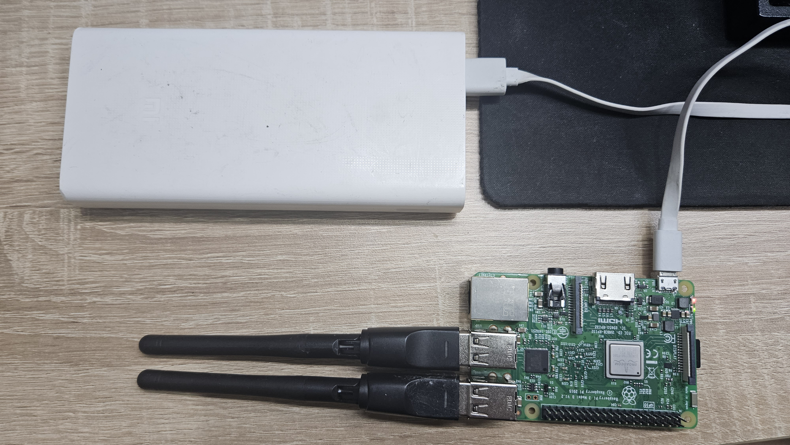

4 Validate and Deploy
This chapter moves from a valid configuration to an operating sensor. First, the Pi performs a short controlled capture. Only after the resulting database passes its checks are the services enabled at boot and tested with field power.
The radio-level demonstration can display nearby device addresses. Perform it with approved test devices and according to the study’s ethics, site, and data security approvals. Do not publish identifiers belonging to bystanders.
4.1 Before You Begin
Continue only after Chapter 2.3 reports configuration: VALID and one planned line per configured channel. Attach every external capture adapter, turn on the approved management hotspot, and keep the laptop on that same network. At this point both sensing services should still be disabled and inactive:
systemctl is-enabled urban-wifi-interfaces.service urban-wifi-capture.service
systemctl is-active urban-wifi-interfaces.service urban-wifi-capture.serviceThe expected four lines are disabled, disabled, inactive, and inactive. If the units are already enabled or active on a first-time walkthrough, stop and determine why before beginning the controlled test.
4.2 Controlled Hardware Test
Keep the configured external WiFi adapters connected and reboot the Pi. The services are still disabled, so rebooting does not start collection.
sudo rebootWait one or two minutes and reconnect from Windows PowerShell:
ssh sensoradmin@sensor-a01.localConfirm the plan after reboot
Verify synchronized time, the wireless default route, and the planned capture mapping:
timedatectl show -p NTPSynchronized --value
ip -j route show default
sudo -u urban-sensing /opt/urban-sensing/venv/bin/urban-wifi-capture interfaces plan \
--config /etc/urban-sensing/config.jsonTime should report yes, and the plan should list one entry for each configured channel.
Create the monitor interfaces
Start only the interface-preparation service:
sudo systemctl start urban-wifi-interfaces.service
sudo -u urban-sensing /opt/urban-sensing/venv/bin/urban-wifi-capture interfaces status \
--config /etc/urban-sensing/config.jsonThe status must contain one present line for every planned line. For a three-channel setup it has this form:
ucap0: present (physical=<first planned interface>, channel=1)
ucap1: present (physical=<second planned interface>, channel=6)
ucap2: present (physical=<third planned interface>, channel=11)This is the first point where present is expected. The management interface carrying the default route remains connected. The physical wlan numbers must match the immediately preceding plan; they are not expected to match a prior boot or another Pi.
Show the radio boundary with tcpdump
Install the conventional diagnostic tool, then display 20 frames from one monitor interface:
sudo apt install -y tcpdump
sudo tcpdump -i ucap0 -e -n -c 20tcpdump reads the raw monitor interface directly, so source, destination, or BSSID MAC addresses may appear. This is intentionally different from the maintained collector. It demonstrates what exists at the radio boundary, not what the research database retains. The recording above was made with the walkthrough author’s own devices in a controlled setup; do not treat its visible addresses as research data.
Run the maintained collector
Start the collector and confirm that it remains active:
sudo systemctl start urban-wifi-capture.service
sudo systemctl status --no-pager urban-wifi-capture.serviceAfter a few seconds, select this run’s database and watch only its increasing record count. Ctrl+C closes this display without stopping the collector; leave it after about ten seconds and allow the controlled run to continue for a total of approximately two minutes.
sleep 2
DB="$(sudo find /var/lib/urban-sensing/data -maxdepth 1 -type f \
-name 'raw_wifi_*.sqlite3' -printf '%T@ %p\n' | sort -nr | head -n 1 | cut -d' ' -f2-)"
test -n "${DB}"
watch -n 1 "sudo -u urban-sensing sqlite3 '${DB}' \
'SELECT count(*) AS pseudonymized_records FROM packets;'"The collector briefly reads a source address in process memory to calculate its HMAC pseudonym. It does not write or print the raw address.
Stop before inspecting the database
sudo systemctl stop urban-wifi-capture.service
sudo systemctl stop urban-wifi-interfaces.service
sudo journalctl -u urban-wifi-capture.service --since "5 minutes ago" --no-pagerThe live row-count query above is deliberately limited to a health signal. Do not copy the database or run schema, integrity, metadata, or row-level inspection while the collector is writing. Perform the checks below only after both services have stopped and the prompt has returned.
4.3 Verify the Stored Data
The recording below selects the newest database created by the version 1.2.9 shutdown path, confirms SQLite integrity, displays five stored 32-character HMAC pseudonyms, and returns zero malformed rows.
Select the newest stopped database again so this section also works after a new SSH login:
DB="$(sudo find /var/lib/urban-sensing/data -maxdepth 1 -type f \
-name 'raw_wifi_*.sqlite3' -printf '%T@ %p\n' | sort -nr | head -n 1 | cut -d' ' -f2-)"
test -n "${DB}"
sudo stat -c '%a %U:%G %n' "${DB}"Checkpoint the database and check its integrity:
sudo -u urban-sensing sqlite3 "${DB}" 'PRAGMA wal_checkpoint(TRUNCATE);'
sudo -u urban-sensing sqlite3 "${DB}" 'PRAGMA integrity_check;'
sudo -u urban-sensing sqlite3 "${DB}" 'PRAGMA table_info(packets);'Show a few stored identifiers. Each value must be 32 lowercase hexadecimal characters rather than a colon-separated raw MAC address:
sudo -u urban-sensing sqlite3 -header -column "${DB}" \
'SELECT source_address AS hmac_pseudonym,
length(source_address) AS characters
FROM packets LIMIT 5;'The final recording verifies the privacy metadata, the completed summary for all three configured channels, zero reported loss, and exact agreement between stored packet rows and records emitted by the capture workers.
Check the privacy metadata and reject malformed rows:
sudo -u urban-sensing sqlite3 "${DB}" \
'SELECT key,value FROM capture_metadata ORDER BY key;'
sudo -u urban-sensing sqlite3 "${DB}" \
"SELECT count(*) AS invalid_rows FROM packets
WHERE length(source_address) <> 32
OR source_address <> lower(source_address)
OR source_address GLOB '*[^0-9a-f]*'
OR source_address_randomized NOT IN (0,1);"Finally, inspect the result for every channel:
sudo -u urban-sensing sqlite3 -header -column "${DB}" \
'SELECT interface,channel,pcap_received,pcap_dropped,interface_dropped,
queue_dropped,records_emitted,records_filtered,completed_at
FROM capture_interface_summary ORDER BY channel,interface;'Confirm that the stored row count equals the sum emitted by the workers:
sudo -u urban-sensing sqlite3 -header -column "${DB}" \
'SELECT (SELECT count(*) FROM packets) AS packet_rows,
(SELECT coalesce(sum(records_emitted),0)
FROM capture_interface_summary) AS emitted_rows,
(SELECT count(*) FROM packets) =
(SELECT coalesce(sum(records_emitted),0)
FROM capture_interface_summary) AS rows_match;'The controlled test passes only if:
- integrity is
ok; - the
packetstable has the documented eight fields; invalid_rowsis0;- metadata reports
hmac-sha256-128-v1with deployment scope; - each configured interface accepted records with all three reported drop counters equal to zero; and
packet_rowsequalsemitted_rows, withrows_matchequal to1.
4.4 Enable Collection at Boot
Enable automatic startup only after the controlled test passes:
sudo systemctl enable urban-wifi-interfaces.service
sudo systemctl enable urban-wifi-capture.service
sudo systemctl is-enabled urban-wifi-interfaces.service urban-wifi-capture.serviceBoth services should report enabled. At the next boot, the interface service excludes the current wireless default-route interface, creates the planned monitor interfaces, and then allows the unprivileged collector to start.
The two services deliberately have different privileges. The short-lived urban-wifi-interfaces.service runs with the bounded root capability needed to prepare monitor interfaces. The long-running urban-wifi-capture.service runs as the unprivileged urban-sensing account. Enabling these units does not make the packet collector run as root.
4.5 Field Check
Turn on the approved mobile hotspot, connect the external battery, and boot the Pi with the capture adapters attached.

After reconnecting over the management network, verify the current boot:
timedatectl show -p NTPSynchronized --value
sudo journalctl -u urban-wifi-interfaces.service -b --no-pager
sudo systemctl status --no-pager urban-wifi-capture.serviceThe interface service must complete successfully, the collector must remain active without restart loops, and every configured channel must produce observations during the approved field check. The collector does not upload the database or disconnect the management interface automatically.
Monitor a headless sensor from the laptop
The Pi does not need a screen. Put the laptop and sensor on the same management network: for example, connect both to the approved phone hotspot, or let the laptop provide the hotspot. Connect by hostname:
ssh sensoradmin@sensor-a01.localIf the hotspot does not resolve .local names, read the Pi’s address from the hotspot’s connected-device list and use it directly:
ssh sensoradmin@<sensor-ip-address>Confirm that automatic collection is enabled and active:
systemctl is-enabled urban-wifi-interfaces.service urban-wifi-capture.service
systemctl is-active urban-wifi-interfaces.service urban-wifi-capture.serviceAll four lines should report enabled or active. Select the database created for the current boot and display only its row count and latest UTC timestamp:
DB="$(sudo find /var/lib/urban-sensing/data -maxdepth 1 -type f \
-name 'raw_wifi_*.sqlite3' -printf '%T@ %p\n' \
| sort -nr | head -n 1 | cut -d' ' -f2-)"
watch -n 2 "sudo -u urban-sensing sqlite3 '$DB' \
'SELECT count(*) AS pseudonymized_records,
max(timestamp) AS latest_utc
FROM packets;'"An increasing count and advancing latest_utc show that the headless sensor is collecting. Press Ctrl+C to leave the display; this does not stop collection. This limited live health query prints no packet identifiers. Stop the collector before running integrity checks, inspecting schemas, or copying a database.
The sensor is field-ready when a power-on boot creates all planned monitor interfaces, starts the collector automatically, and produces an increasing record count. The laptop is optional during collection: it is a management and health-check tool, not part of the sensing pipeline.
The collector writes locally and needs no cloud connection after it has started. If cellular internet drops but the hotspot’s local WiFi remains on, collection and laptop SSH monitoring continue. If the hotspot itself turns off, SSH becomes unavailable but an already running collector continues locally. After any reboot, do not treat the deployment as healthy until the management connection returns and timedatectl show -p NTPSynchronized --value reports yes.
4.6 End a Session Safely
Stop collection and shut down cleanly before disconnecting power:
sudo systemctl stop urban-wifi-capture.service
sudo systemctl stop urban-wifi-interfaces.service
sudo shutdown -h nowThe SSH session closes as the Pi shuts down. Wait until shutdown has completed and storage activity has ceased before disconnecting the battery. Do not end a sensing session by removing power.